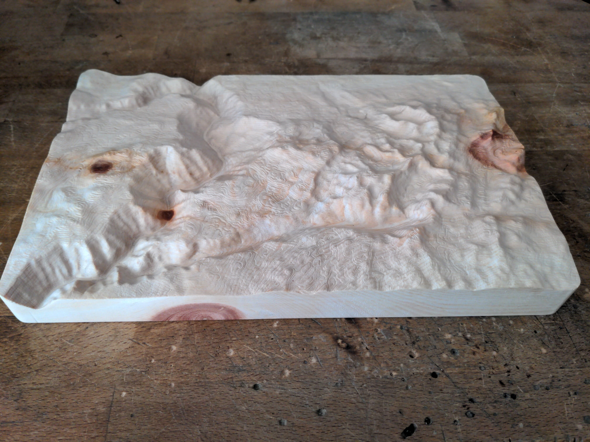
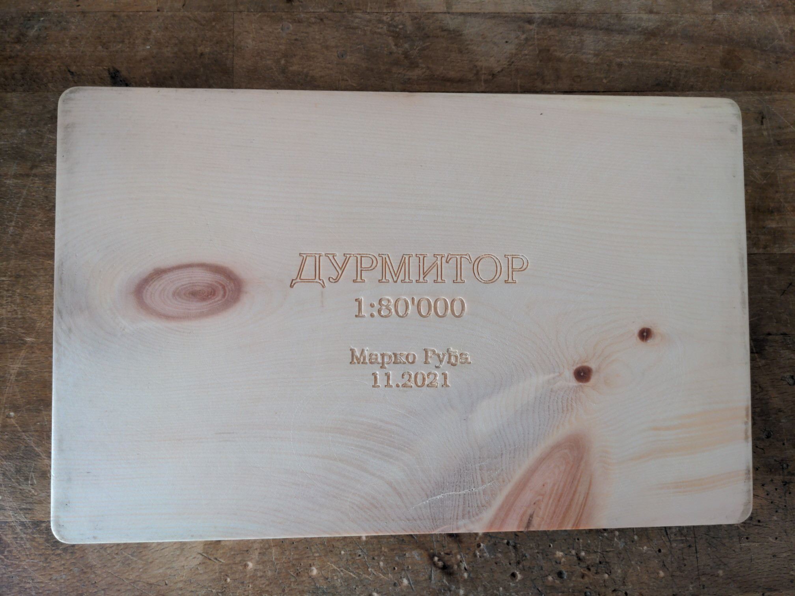
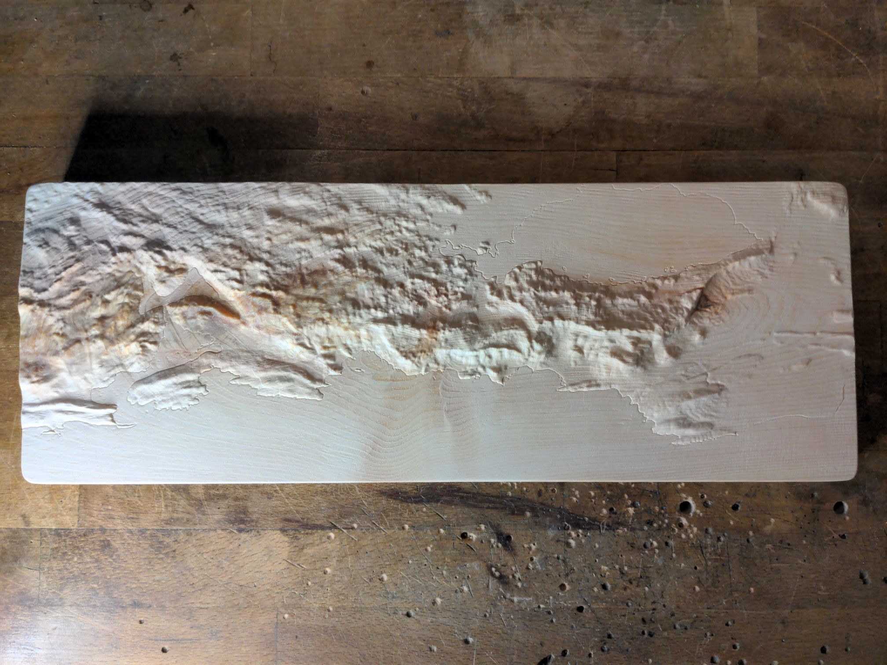
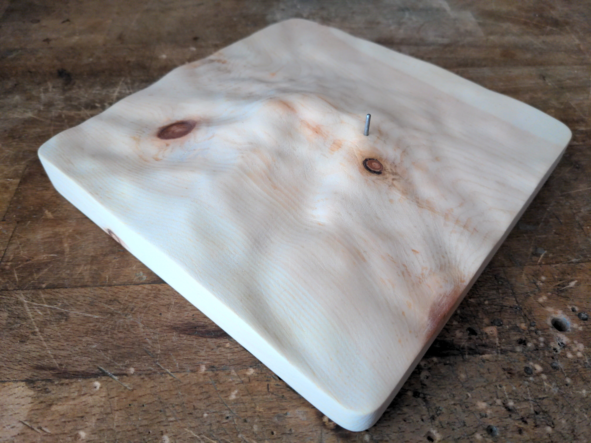

I made these out of Swiss pine wood (Arve) as gifts for my parents and for my family back in Serbia. They depict in order: The Durmitor massif in northwestern Montenegro, the Montenegrin coast, and the "mountain" Avala near Belgrade with its prominent TV tower. Each one took a few hours to make on my CNC router.
   